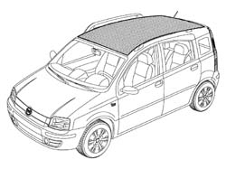
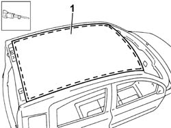
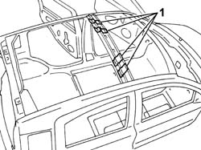
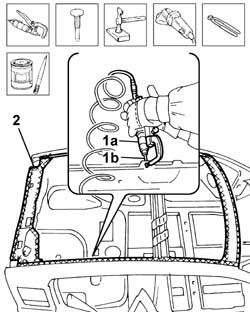
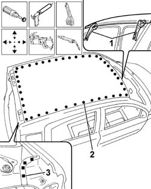

7210E28 R.R. ROOF PANEL
- Path
- Procedures > 72 PANELS AND FRAME > 7210 REMOVING REFITTING > 7210E EXTERNAL PARTS > 7210E28 R.R. ROOF PANEL
- Kind
- repair procedure (removal / refitting; the operation number is the code)
- Applies to
- all engines; all production periods
- Interactive page
- https://sloeber94.github.io/elrnDB-fPnd/en/#/2753357
Applies to: all engines; all production periods
 Removing
Removing
 Refitting
RefittingCheck if any of the connected parts are deformed by checking body alignment dimensions. Use appropriate measurement tools (reference rigs, templates or gauges).
If necessary, straighten the body before cutting the part.

Applies to: all engines; all production periods
1. Use a power saw to cut along around the outside of the roof trim.

Applies to: all engines; all production periods
1. Heat the area of the rib to facilitate the detachment of the sealant.
Remove the roof panel.

Applies to: all engines; all production periods
Refitting
RemovingUse a rotary brush to remove paint to gain access to the weld spots.
1. Use a chamfering machine (1a) to reduce the spot welds (1b) around the perimeter of the roof panel.
Remove the metal offcuts using a hammer and chisel.
Straighten the edges of the panel.
Use a grinding wheel to remove the spot weld residues.
Use a rotary brush to clean treated areas.
2. Apply electroweldable paint to the edges of the bodyshell which will be involved in the welding later on.

Applies to: all engines; all production periods
Use a rotary brush to remove the corrosion-proofing around the edge of the parts.
Apply electro-galvanizing paint to the edges in contact with the vehicle.
Renew the sealant on the rib by the area welded previously.
1. Position the replacement part correctly on the bodyshell and secure it using the self-locking clamps.
Check the parts are properly aligned.
2. Use a spot welder to weld the areas shown in the figure.
3. Use a MIG welder to fill weld the areas shown.

Applies to: all engines; all production periods
Correct any deformations in the panel using a profiled stake and mallet.
Use a grinding wheel to level the welds
Use a rotary brush to clean the newly-welded areas.
Apply rust-proofing to newly-welded areas.
Seal the joint lines between the part and the car.